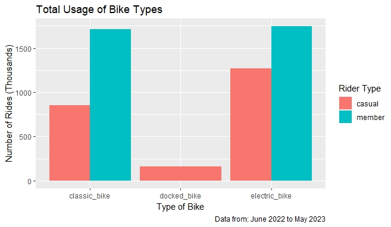
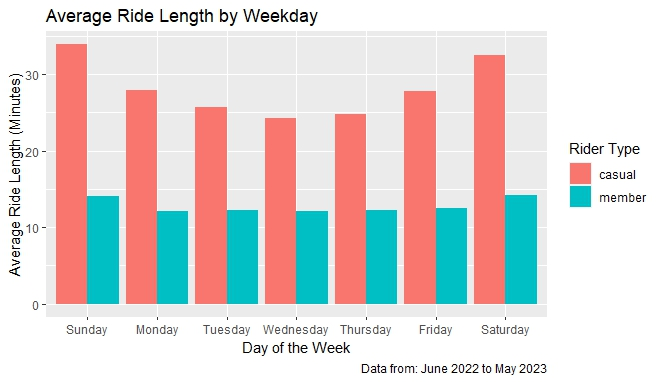
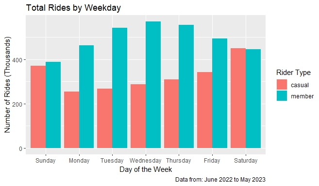
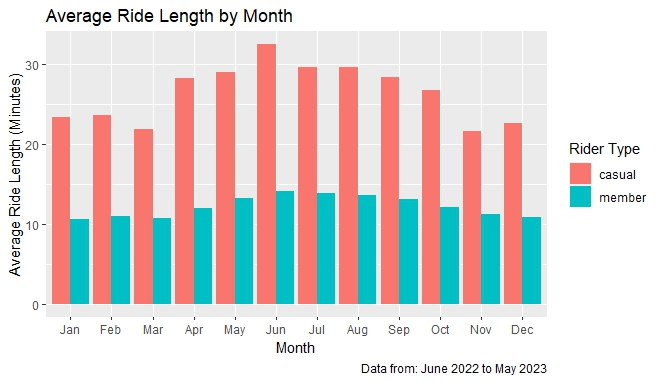
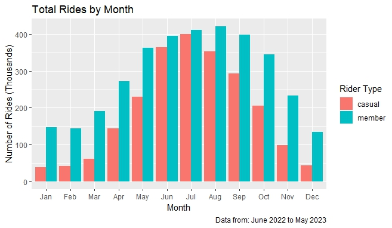
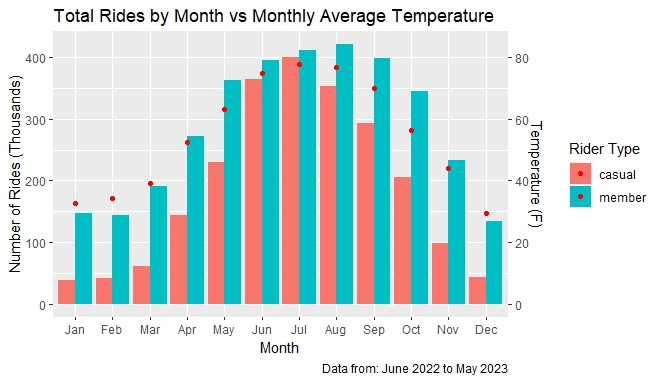
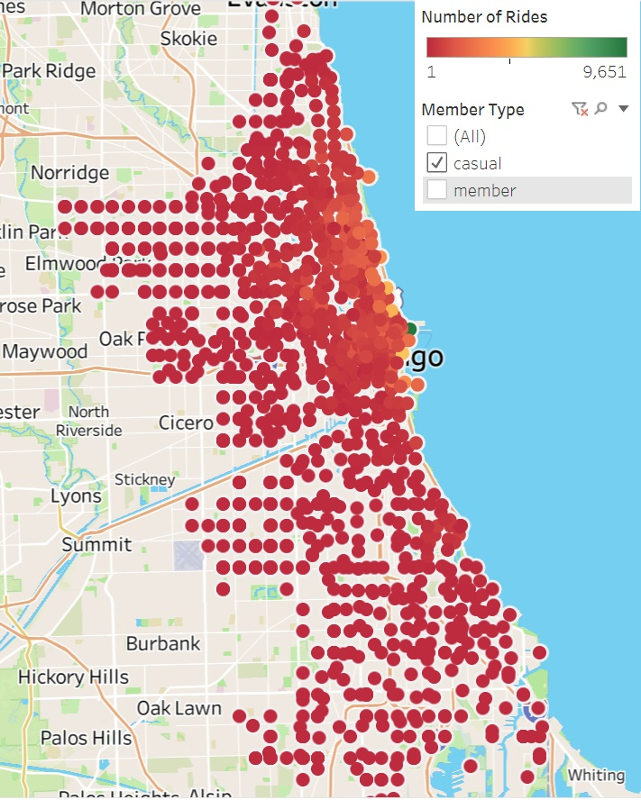
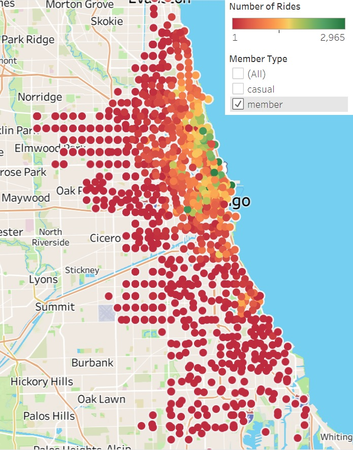

Cyclistic Bike Share
Google Data
Analytics Capstone
Case Study Scenario
Provided by Coursera Curriculum
You are a junior data analyst working in the marketing analyst team at Cyclistic,
a bike-share company in Chicago.
The director of marketing believes the company’s future success depends on
maximizing the number of annual memberships. Therefore, your team wants to understand
how casual riders and annual members use Cyclistic bikes differently. From these
insights, your team will design a new marketing strategy to convert casual
riders into annual members.
Cyclistic’s marketing strategy relied on building general awareness and
appealing to broad consumer segments. One approach that helped make these things
possible was the flexibility of its pricing plans: single-ride passes,
full-day passes, and annual memberships. Customers who purchase single-ride or
full-day passes are referred to as casual riders. Customers who purchase annual
memberships are Cyclistic members.
Stakeholders
Lily Moreno: The director of marketing and your manager.
Cyclistic marketing analytics team: A team of data analysts who are responsible for
collecting, analyzing, and reporting data that helps guide Cyclistic marketing strategy.
Cyclistic executive team: The notoriously detail-oriented executive team will decide
whether to approve the recommended marketing program.
From the Company
Cyclistic’s finance analysts have concluded that annual members are much more profitable
than casual riders. Although the pricing flexibility helps Cyclistic attract more customers,
Moreno believes that maximizing the number of annual members will be key to future growth.
Rather than creating a marketing campaign that targets all-new customers, Moreno believes
there is a very good chance to convert casual riders into members.
Moreno has set a clear goal: Design marketing strategies aimed at converting casual riders
into annual members. In order to do that, however, the marketing analyst team needs to better
understand how annual members and casual riders differ, why casual riders would buy a membership,
and how digital media could affect their marketing tactics. Moreno and her team are interested
in analyzing the Cyclistic historical bike trip data to identify trends.
Breaking It Down
The Google Data Analyst course breaks down the analysis process into 6 steps:
1. Ask
2. Prepare
3. Process
4. Analyze
5. Share
6. Act
Deliverables
1. A clear statement of the business task
2. A description of all data sources used
3. Documentation of any cleaning or manipulation of data
4. A summary of analysis
5. Supporting visualizations and key findings
6. Top three recommendations based on your analysis
Ask Phase - The Business Objective
What is the problem to be to solved?
"Design a new marketing strategy to convert casual riders into annual members."
Supporting Questions
1. How do annual members and casual riders use Cyclistic bikes differently?
2. Why would casual riders buy Cyclistic annual memberships?
3. How can Cyclistic use digital media to influence casual riders to become members?
Exploring how current customers utilize the services
provided can clarify the path to furthering success.
Prepare Phase - Data Collection
Identify and explain any potential external data sources that would help with
planning and analysis.
Cyclistic bike trip data is provided for analysis
here
Note: Cyclistic is a fictional company.
Motivate International Inc. has provided the data under the following
license.
I downloaded the last 12 months of data to use for this case study:
June 2022 - May 2023
The data organized into monthly csv files broken into 13 columns.
| Column Name |
Description |
| ride_id |
Unique ID generated for each ride |
| rideable_type |
Type of bike - Classic, Electric, and Docked |
| started_at |
Date-Time for trip start |
| ended_at |
Date-Time for trip end |
| start_station_name |
Trip starting station |
| start_station_id |
ID for starting station |
| end_station_name |
Trip ending station |
| end_station_id |
ID for ending station |
| start_lat |
Lattitude for starting station |
| start_lng |
Longitude for starting station |
| end_lat |
Lattitude for ending station |
| end_lng |
Longitude for ending station |
| member_casual |
Casual or Member (Annual Subscriber) |
Data coming directly from the business that collected it from the
past 12 months meets the credibility criteria: Reliable - Original -
Comprehensive - Current - Cited
Weather data for Chicago coinciding with the historical data was obtained
from https://www.weather.gov/.
Process Phase - Data Cleaning
Clean Data + Alignment to Business Objective = Accurate Conclusions
I first opened each file with Microsoft Excel to evaluate and format the data.
I love spreadsheets and was excited to get to work. However, jumping into action
led me down a long path with plenty of learning opportunities.
Now that I had some idea of what I was up against, I decided to expand my
RStudio skills. The sheer volume of data (over 5 million rows) made this a much
better tool for the job.
I began by loading the csv files into data frames with read_csv()
#Load Data
tripdata_0622 <- read_csv("202206-divvy-tripdata.csv")
tripdata_0722 <- read_csv("202207-divvy-tripdata.csv")
tripdata_0822 <- read_csv("202208-divvy-tripdata.csv")
tripdata_0922 <- read_csv("202209-divvy-tripdata.csv")
tripdata_1022 <- read_csv("202210-divvy-tripdata.csv")
tripdata_1122 <- read_csv("202211-divvy-tripdata.csv")
tripdata_1222 <- read_csv("202212-divvy-tripdata.csv")
tripdata_0123 <- read_csv("202301-divvy-tripdata.csv")
tripdata_0223 <- read_csv("202302-divvy-tripdata.csv")
tripdata_0323 <- read_csv("202303-divvy-tripdata.csv")
tripdata_0423 <- read_csv("202304-divvy-tripdata.csv")
tripdata_0523 <- read_csv("202305-divvy-tripdata.csv")
With the ultimate goal of merging into a single data frame, I
checked for column name and datatype consistency with the str() function.
The results of the str() function were copied into a spreadsheet column for the
column names and datatypes to be filtered out with formulas.
Example:
$ ride_id : chr [1:604827] "0D9FA920C3062031" "92485E5FB5888ACD"...
=MID( LEFT(B2,FIND(":",B2)-1), FIND("$",B2)+1, LEN(B2))
Return characters between $ and : (column name)
=MID( LEFT(B2,FIND("[",B2)-1), FIND(":",B2)+1, LEN(B2))
Return characters between : and [ (datatype)
These results were pasted into a separate sheet together for comparison.
One datatype was found to be different than the rest.
#september data > "end_station_id" stored as num vice chr
#change end_station_id to chr
tripdata_0922$end_station_id <- as.character(tripdata_0922$end_station_id)
Each data frame was checked for consistency on the member_casual field.
No issues found.
unique(dataframe$member_casual)
Only "member" or "casual" were used to define rider type.
summary() function was used to ensure no vital fields were NA.
Cleaning and organizing was now complete. On to the next step.
Analyze Phase - Data Exploration and Visualization
How to format the data to better perform analysis?
I started by merging the 12 data frames into one and verified the result.
# combine all monthly data frames into one data frame
all_trips <- bind_rows(tripdata_0622, tripdata_0722, tripdata_0822,
tripdata_0922, tripdata_1022, tripdata_1122, tripdata_1222,
tripdata_0123, tripdata_0223, tripdata_0323, tripdata_0423, tripdata_0523)
#verify new single data frame
summary(all_trips)
Now, that everything was fit together nicely, it was time to start
organizing available information.
First, comparing date-time data was very unpleasant. I used the difftime() function
to create a column to show the length of rides in seconds.
#creating new field ride_length
all_trips$ride_length <- difftime(all_trips$ended_at,all_trips$started_at)
#verify results
view(head(all_trips))
The ride_length column was of numeric difftime type and contained the
units "secs".
I converted to numeric to make the data stackable.
#converting ride_length to numeric
all_trips$ride_length <- as.numeric(as.character(all_trips$ride_length))
#verify results
view(head(all_trips))
Question: Who rides for longer?
#minimum ride length
min(all_trips$ride_length)
#Minimum: -621201
Negative ride_length can't be right - some additional cleaning is necessary.
#assume any ride less than 30 seconds is not a ride
all_trips_2 <- all_trips[!(all_trips$ride_length < 30), ]
Now to answer the question.
#compare average ride_length between casual and members:
aggregate(all_trips$ride_length ~ all_trips$member_casual, FUN = mean)
1692 (28min) vs 747(12 min) - casual trips are twice as long on average.
Question: When does each group ride?
Creating a column to split the start_date field into pieces would make this analysis easier.
#Create columns for date, month, day, and year of each ride to determine usage
all_trips_2$date <- as.Date(all_trips_2$started_at)
all_trips_2$month <- format(as.Date(all_trips_2$date), "%m")
all_trips_2$day <- format(as.Date(all_trips_2$date), "%d")
all_trips_2$year <- format(as.Date(all_trips_2$date), "%Y")
all_trips_2$day_of_week <- format(as.Date(all_trips_2$date), "%A")
#verify results
summary(all_trips_2)
view(head(all_trips_2))
str(all_trips_2)
Now to compare casual to member riders for ride length on each day.
#compare average ride_length between casual and members by day of the week
aggregate(all_trips_2$ride_length ~ all_trips_2$member_casual + all_trips_2$day_of_week, FUN = mean)
The result has days of the week out of order, making the information less clear.
#organize days and view average ride_length by user type
all_trips_2$day_of_week <- ordered(all_trips_2$day_of_week,
levels=c("Sunday", "Monday", "Tuesday",
"Wednesday", "Thursday", "Friday", "Saturday"))
With the days of the week organized, I checked ride_length again.
Both groups have longer average trips on the weekend compared to the weekdays.
Having lost the data stored in memory once already,
it was time to commit this work to a file.
#writing output file
write.csv(all_trips_2,
"/Users/brand/Desktop/casestudy/csv/all_trips.csv",
row.names=FALSE)
Share Phase
Communicating and Interpreting Results
Numbers are nice, but pictures can help tell the story of the data.
The aggregations that were made already were obvious first choices, but
let's see what bike type usage looks like.

The docked bike has very low usage and only by casual riders.
More information is needed to determine what this means and how it effects the data.
Now, on to the average ride weekly usage.

This image of trip length by weekday shows the higher usage on
by casual riders on weekends.
In comparison to the number of rides per day,
it is very clear that members utilze the service more often.

Now let's see how this data shows throughout the year.

Both groups show an increase in duration throughout the spring and summer months.
Along with duration, more rides take place in the summer months as well.

There seems to be a correlation with temperature and riders.
I obtained the monthly average temperature for Chicago in the analysis
time frame and plotted it against the monthly rides.

The data tracks across the year.
More rides and of longer duration occur when it is warmer.
I loaded the summer data into Tableau to utilize the geographical data and find concentration of usage.
This visualization can be found
here.
Casual Rider Concentration

Annual Member Concentration

My Thoughts:
Tourists can be more of a contributor to earnings by partnering with local
attractions to promote Cyclistic as a viable option to get between destinations.
These same pairings can also convert some casual riders to members.
Analysis of strengths, weaknesses, opportunities, and threats is an effective method of
improving business operations. Surverying existing members for what they consider the
benefits to having a membership could generate ideas to advertise to potential customers.
Knowing what the customer currently likes or would like is valuable information on what
changes, if any, are necessary.
Studying and promoting the health benefits of riding a bike, reducing pollution and traffic
congestion, along with transportation efficiency would be beneficial to would be members as well.
A campaign encouraging, promoting, or creating clubs based around riding together - whether it be for attractions
or exercise can be a conversion point to those who want do not enjoy going to the gym.
Act Phase
Putting insights to work to solve the problem
Recommendations
The consistency of ride length throughout the week by members is likely due to the usage
for commuting. Perhaps creating incentives or educational information for local businesses to
consider offering employees a membership or discount would result in more subscriptions.
Quarters 2 and 3 being the peak use time is the best time to target advertising.
Further study of the station usage data can help determine which locations are best to advertise to
casual riders. This includes where more stations might be necessary ot which locations are
under utilized and could be improved or closed. This would better focus resources where needed.